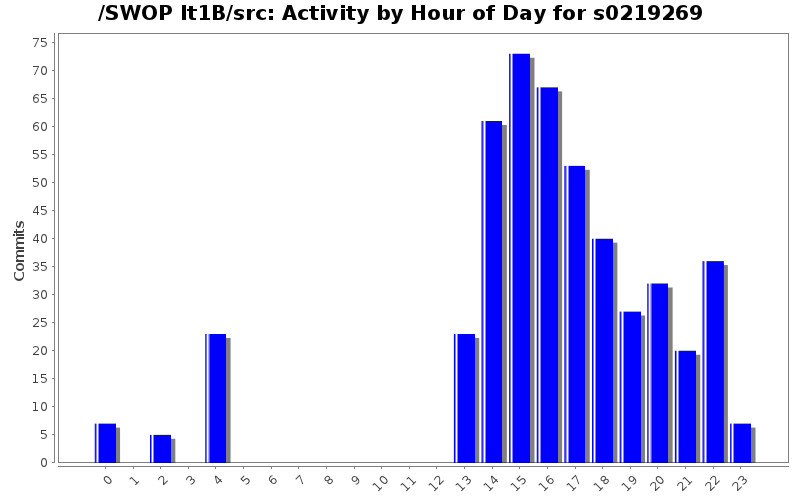
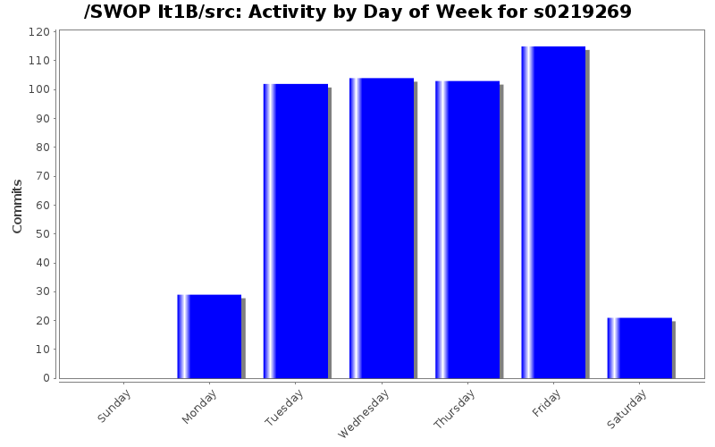
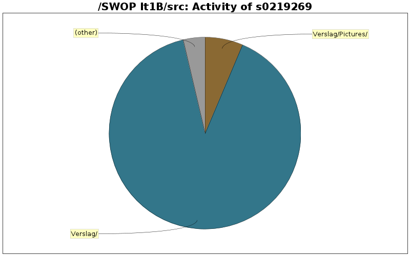

| Directory | Changes | Lines of Code | Lines per Change |
|---|---|---|---|
| Totals | 474 (100.0%) | 21351 (100.0%) | 45.0 |
| Verslag/ | 67 (14.1%) | 19202 (89.9%) | 286.5 |
| Verslag/Pictures/ | 5 (1.1%) | 1363 (6.4%) | 272.6 |
| Hospital/World/ | 28 (5.9%) | 425 (2.0%) | 15.1 |
| Hospital/People/ | 27 (5.7%) | 154 (0.7%) | 5.7 |
| Hospital/Schedules/ | 33 (7.0%) | 87 (0.4%) | 2.6 |
| Hospital/Machine/ | 10 (2.1%) | 69 (0.3%) | 6.9 |
| Hospital/Controllers/ | 70 (14.8%) | 51 (0.2%) | 0.7 |
| HospitalUI/WareHouseUI/ | 4 (0.8%) | 0 (0.0%) | 0.0 |
| HospitalUI/NurseUI/ | 7 (1.5%) | 0 (0.0%) | 0.0 |
| HospitalUI/MainUI/ | 4 (0.8%) | 0 (0.0%) | 0.0 |
| HospitalUI/DoctorUI/ | 8 (1.7%) | 0 (0.0%) | 0.0 |
| HospitalUI/AdminUI/ | 5 (1.1%) | 0 (0.0%) | 0.0 |
| Hospital/WareHouse/OrderPlacers/ | 7 (1.5%) | 0 (0.0%) | 0.0 |
| Hospital/WareHouse/Items/ | 17 (3.6%) | 0 (0.0%) | 0.0 |
| Hospital/WareHouse/ItemQueues/ | 2 (0.4%) | 0 (0.0%) | 0.0 |
| Hospital/WareHouse/ | 25 (5.3%) | 0 (0.0%) | 0.0 |
| Hospital/Treatments/ | 19 (4.0%) | 0 (0.0%) | 0.0 |
| Hospital/Schedules/Constraints/ | 7 (1.5%) | 0 (0.0%) | 0.0 |
| Hospital/People/PeopleFactories/ | 4 (0.8%) | 0 (0.0%) | 0.0 |
| Hospital/Patient/ | 26 (5.5%) | 0 (0.0%) | 0.0 |
| Hospital/MedicalTest/ | 23 (4.9%) | 0 (0.0%) | 0.0 |
| Hospital/Factory/ | 5 (1.1%) | 0 (0.0%) | 0.0 |
| Hospital/Exception/ | 51 (10.8%) | 0 (0.0%) | 0.0 |
| Hospital/Argument/ | 15 (3.2%) | 0 (0.0%) | 0.0 |
| Hospital/ | 3 (0.6%) | 0 (0.0%) | 0.0 |
| / | 2 (0.4%) | 0 (0.0%) | 0.0 |

9428 lines of code changed in 1 file:
merged met verslag van iteratie 2, we krijgen dit verslag op onze verdediging dus kan er maar beter alles in staan (bijna klaar)
0 lines of code changed in 1 file:
moved warehouse from world to campus (this did break treatmentcommand because we can't know the campus to reserve the items before the appointment is made, and we can't make the treament before the items are reserved)
0 lines of code changed in 17 files:
Implemented login to a specific campus, used by NurseController to check in patients at a specific location
moved getting the list of people that can log in to world (from worldcontroller)
103 lines of code changed in 19 files:
campus added to patient
campusses added to basicworld
0 lines of code changed in 7 files:
added basic campus object and campusses in the world
88 lines of code changed in 4 files:
kleine refactorings + verslag
0 lines of code changed in 7 files:
class diagram naar einde document verplaatst ten goede van de layout
rode titels verwijderd
0 lines of code changed in 7 files:
eclemma verslag
use case list orders in het verslag ingevoegd
0 lines of code changed in 7 files:
verslag todo list in verdeling! (we zijn bijna klaar)
kleine updates aan het verslag
0 lines of code changed in 7 files:
jeroen VG's tekst over administratie toegevoegd
0 lines of code changed in 6 files:
herwoording van een zin, dt check op alle voorkomens van word(t) in het verslag
@ruben zou het er niet beter uitzien als de originele latexcode word ingevoegd op de plaats van het testing strategy verslag?
0 lines of code changed in 1 file:
enkele kleine aanpassingen
0 lines of code changed in 5 files:
usecases discharge en register patient
0 lines of code changed in 7 files:
tabel werkverdeling in verslag
0 lines of code changed in 5 files:
verdeling
0 lines of code changed in 1 file:
more javadocs, please keep these up to date (all @param tags, all @return tags, all @throws tags, for every function)
0 lines of code changed in 32 files:
svg (zonder nummertjes)
1363 lines of code changed in 4 files:
update verslag, ROOD=> nog niet gedaan
0 lines of code changed in 6 files:
updates verslag
0 lines of code changed in 5 files:
(51 more)